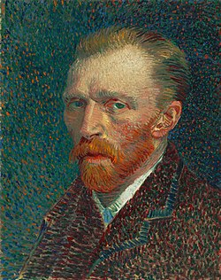

Sobre Vincent van Gogh
Vincent Willem van Gogh foi um pintor pós-impressionista neerlandês. Considerado um dos maiores artistas da história da arte ocidental, Van Gogh nasceu em 1853, nos Países Baixos, e faleceu em 1890, na França.
Sua obra inclui cerca de 2.100 pinturas, a maioria produzida nos últimos dois anos de sua vida. Entre suas obras mais famosas estão "Noite Estrelada", "Girassóis" e "O Quarto em Arles".
Principais Obras

Auto-retrato de Vincent van Gogh (1889)